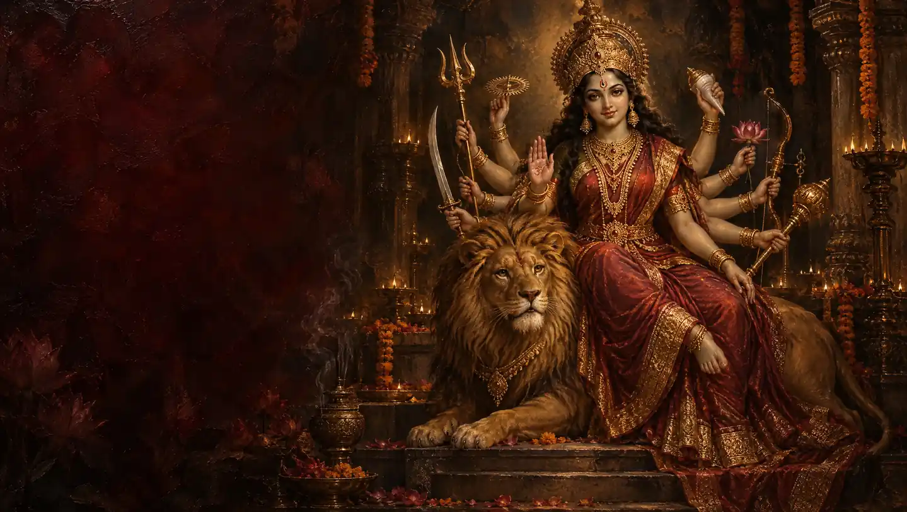

Goddess Durga
Argala Stotram
The hymn recited before the Devi Mahatmyam, with its refrain “rūpaṃ dehi jayaṃ dehi”.
Begin chantingMeaning & traditionजयन्ती मङ्गला काली भद्रकाली कपालिनी ।
Victorious, auspicious, Kali, Bhadrakali, bearer of the skull-bowl;दुर्गा क्षमा शिवा धात्री स्वाहा स्वधा नमोऽस्तु ते ॥
Durga, the forgiving, the gracious, the sustainer, Svaha and Svadha: salutations to you.जय त्वं देवि चामुण्डे जय भूतार्तिहारिणि ।
Victory to you, Goddess Chamunda; victory to the remover of the suffering of beings;जय सर्वगते देवि कालरात्रि नमोऽस्तु ते ॥
victory to the all-pervading Goddess. O Kalaratri, salutations to you.मधुकैटभविद्राविविधातृवरदे नमः ।
Salutations to you who routed Madhu and Kaitabha and granted boons to Brahma.रूपं देहि जयं देहि यशो देहि द्विषो जहि ॥
Grant beauty, grant victory, grant renown, and destroy hostility.अर्थ
जयन्ती, मंगला, काली, भद्रकाली, कपालिनी, दुर्गा, क्षमा, शिवा, धात्री, स्वाहा और स्वधा, आपको नमस्कार है। हे चामुण्डा, प्राणियों की पीड़ा हरने वाली, सर्वव्यापी कालरात्रि, आपकी जय हो। मधु और कैटभ को भगाने वाली और ब्रह्मा को वर देने वाली देवी को नमस्कार। रूप दो, विजय दो, यश दो और शत्रुता का नाश करो।
Jayantī maṅgalā kālī bhadrakālī kapālinī
Victorious, auspicious, Kali, Bhadrakali, bearer of the skull-bowl;Durgā kṣamā śivā dhātrī svāhā svadhā namo’stu te
Durga, the forgiving, the gracious, the sustainer, Svaha and Svadha: salutations to you.Jaya tvaṃ devi cāmuṇḍe jaya bhūtārtihāriṇi
Victory to you, Goddess Chamunda; victory to the remover of the suffering of beings;Jaya sarvagate devi kālarātri namo’stu te
victory to the all-pervading Goddess. O Kalaratri, salutations to you.Madhukaiṭabhavidrāvividhātṛvarade namaḥ
Salutations to you who routed Madhu and Kaitabha and granted boons to Brahma.Rūpaṃ dehi jayaṃ dehi yaśo dehi dviṣo jahi
Grant beauty, grant victory, grant renown, and destroy hostility.Meaning
Victorious, auspicious, Kali, Bhadrakali, bearer of the skull-bowl; Durga, the forgiving, the gracious, the sustainer, Svaha and Svadha: salutations to you. Victory to you, Goddess Chamunda; victory to the remover of the suffering of beings; victory to the all-pervading Goddess. O Kalaratri, salutations to you. Salutations to you who routed Madhu and Kaitabha and granted boons to Brahma. Grant beauty, grant victory, grant renown, and destroy hostility.
Jayanti Mangalaa Kaali Bhadrakaali Kapaalini
Victorious, auspicious, Kali, Bhadrakali, bearer of the skull-bowl;Durgaa kshamaa shivaa dhaatree svaahaa svadhaa namostu te
Durga, the forgiving, the gracious, the sustainer, Svaha and Svadha: salutations to you.Jaya tvam devi chaamunde jaya bhootaartihaarini
Victory to you, Goddess Chamunda; victory to the remover of the suffering of beings;Jaya sarvagate devi kaalaraatri namostu te
victory to the all-pervading Goddess. O Kalaratri, salutations to you.Madhukaitabhavidraavividhaatrivarade namah
Salutations to you who routed Madhu and Kaitabha and granted boons to Brahma.Roopam dehi jayam dehi yasho dehi dvisho jahi
Grant beauty, grant victory, grant renown, and destroy hostility.Meaning (Hinglish)
Jayanti, Mangalaa, Kaali, Bhadrakaali, Kapaalini, Durgaa, Kshamaa, Shivaa, Dhaatri, Svaahaa aur Svadhaa, aapko namaskaar. He Chaamundaa, praaniyon ki peedaa harne vaali, sarvavyaapi Kaalraatri, aapki jai ho. Madhu aur Kaitabh ko bhagaane vaali aur Brahmaa ko var dene vaali Devi ko namaskaar. Roop do, vijay do, yash do aur shatrutaa ka naash karo.
Opening three verses of the Argala Stotram; the hymn has about twenty-five. Verse order varies slightly between editions. The first verse is also on the Jayanti Mangala Kali page. English meanings are paraphrases; punctuation and Devanagari spelling are normalized.
Your daily mala
One chant, one bead.
Saved on this device. Return whenever you’re ready.
About the Argala Stotram
The Argala Stotram is recited after the Devi Kavach and before the Devi Mahatmyam. An argala is a bolt that secures a door: the hymn is seen as securing the reader’s practice. From its third verse on, each verse ends with the refrain asking for beauty, victory and renown, and for hostility to be destroyed.
Best time to chant: Before reading the Devi Mahatmyam, especially during Navratri.
Benefits of the Argala Stotram
- The hymn recited before the Devi Mahatmyam, with its refrain “rūpaṃ dehi jayaṃ dehi”.
- Repeated recitation can be used as a practice of attention and devotion.
How to chant the Argala Stotram
- Read each line together with its meaning before beginning.
- Recite the complete prayer slowly, following the script you prefer.
- Use the counter after each complete recitation. Choose a comfortable number of repetitions.
Frequently asked questions
Where does Argala Stotram come from?
Opening three verses of the Argala Stotram; the hymn has about twenty-five. Verse order varies slightly between editions. The first verse is also on the Jayanti Mangala Kali page.
What does one count represent?
One count represents one complete recitation of the prayer displayed on this page. You can choose a short practice or count 108 repetitions.